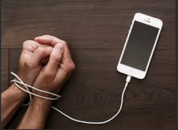

O vício em internet pode causar sérios prejuízos à saúde mental, como ansiedade, depressão e isolamento social, pode afetar o sono, concentração e o desempenho escolar ou profissional, o uso excessivo de dispositivos digitais muitas vezes substitui interações reais, promovendo o sedentarismo e dificulta o equilíbrio entre vida online e offline.
É um comportamento compulsivo de uso excessivo de redes sociais, movido pela busca de validação instantânea (curtidas, notificações). Isso cria um ciclo vicioso onde a vida virtual substitui experiências reais, prejudicando a saúde mental e os relacionamentos.
Como Afeta Jovens e Adolescentes?
Saúde Mental: Causa ansiedade, depressão e baixa autoestima devido à comparação constante com a vida "perfeita" dos outros. Vida Social: Relacionamentos ficam superficiais, e o medo de estar por fora (FOMO) gera isolamento mesmo estando "conectado". Desempenho: Queda na concentração e produtividade nos estudos, devido às notificações constantes e à dificuldade de foco.
O Papel e o Impacto nos Pais
Pondem sintir preocupação e frustração com a desconexão familiar e as brigas constantes sobre o uso do celular.
Como lidar: 1. Estabelecer regras claras (como "zonas sem celular" em refeições e quarto). 2. Dialogar sobre os perigos das redes, não apenas proibir. 3. Dar o exemplo e criar momentos de conexão real em família. 4. Buscar ajuda profissional se a saúde mental do jovem estiver abalada.
